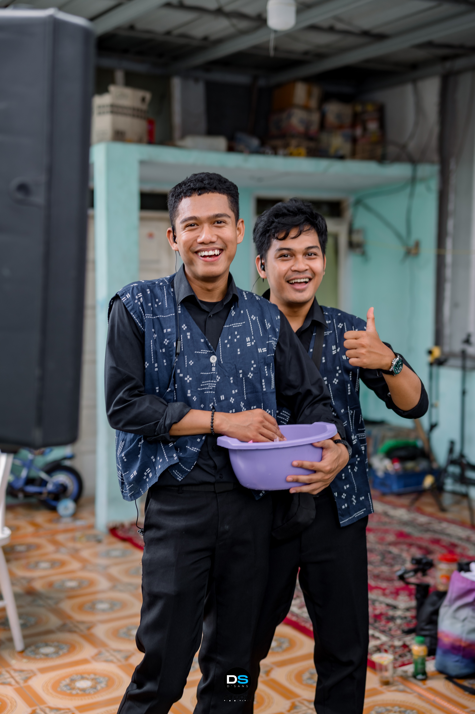

1 Syawal 1447 H
Eid
Mubarak
Untuk sahabatku,
Dandi.
Taqabbalallahu
Minna Wa Minkum
Alhamdulillah, we made it through another beautiful Ramadan. Semoga Allah menerima semua puasa dan doa kita.
Dan, I just wanted to say thank you. Terima kasih sudah menjadi sahabat syurga yang selalu mengingatkan pada kebaikan. Terima kasih juga sudah menjadi konsultan peroutfitan selama ini haha. Di momen fitri ini, I want to ask for your forgiveness. Maafkan segala salah dan candaan yang kelewatan ya.
May this Eid bring you and your family immense joy. Semoga persahabatan kita eternal until Jannah. Amin.

"Sahabat sejati adalah mereka yang membantumu menuju surga-Nya."